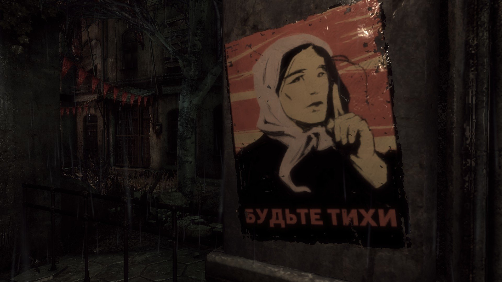

Този предпазен щит над авариралия реактор на Чернобилската АЕЦ е колосален проект, средства за който бяха осигурени от международната общност. Очаква се той да гарантира сигурността на обекта в близките 100 години, посочва Франс прес. "Церемонията бележи ключов момент от международния проект за преобразяване на мястото на аварията от 1986 г.", заявиха в комюнике френските компании Буиг и Венси, конструирали съоръжението. Куполът представлява метален скелет с тегло 25 000 тона (36 000 тона с допълнителното оборудване), 108 метра висок и с дължина 162 метра.
30 години след аварията в атомната централа в Чернобил, Чернобилската гора придобива съвсем нов вид в сравнение с преди зловещата катастрофа. В рамките на един от екопроектите в областта били извършени проучвания, които удивили не само учените. Целта била да се изучи какви животински видове населяват в момента територията около Чернобилската атомна централа и каква е тяхната популация. Оказало се, че след 3 десетилетия „отровените" земи са се превърнали в нещо като естествен резерват и са пренаселени с животински видове.
Според учените истинската причина за увеличаването на дивите животни по тези места не е в нея – а в липсата на човешка намеса сред природните ресурси. Както е известно, силният радиационен фон в повечето случаи разрушава репродуктивната система и живото същество умира, без да остави потомство. А чернобилските елени и лосове са се намножили и то без мутации като триглави или безноги чудовища.
Безброй слухове се разпространяват след катастрофата в Чернобилската АЕЦ. Много от тях са откровени лъжи. Ето три от разпространените митове:
Първи: от силното облъчване умират всички. Това не е така. Лъчевата болест е лечима. В Русия има няколко хиляди ликвидатори на Чернобилската авария. Лъчева болест обаче е имало само при 134-ма. Починали са само 28 души.
Втори: хората с лъчева болест раждат деца с вродени дефекти. В практиката на руските лекари такива случаи няма.
Трети: облъчването води до импотентност. Няма такова нещо. Половата функция отслабва само през "острия" период, както и при всяка друга тежка болест. Когато кръвта се възстанови, възстановява се и всичко останало.
Първите дни просто никой не знаеше какво точно става и затова мерките бяха неадекватни. Шведски учени първи разкриха страшната истина за катастрофата
в Чернобил след взрива. Общото мнение на членовете на Политбюро бе върху всичко да се хвърля светлината в рамките на популярната вече в страната гласност. Затова приказките, че Кремъл е крил информация за събитията в Чернобил, не отговарят на истината. Всичките ни опити, още в първия ден да получим пълна информация за мащабите на катастрофата, не се увенчаха с успех. Аз съм сигурен, че правителствената комисия и учените не са крили истината за случилото се. Те просто още не я знаеха. Че това е така, се потвърждава от факта, че висши членове на комисията, които посетиха мястото на аварията, където се намира реакторът, останаха да преспят в хотел до Чернобил. За вечеря им даваха обикновена вода и храна.